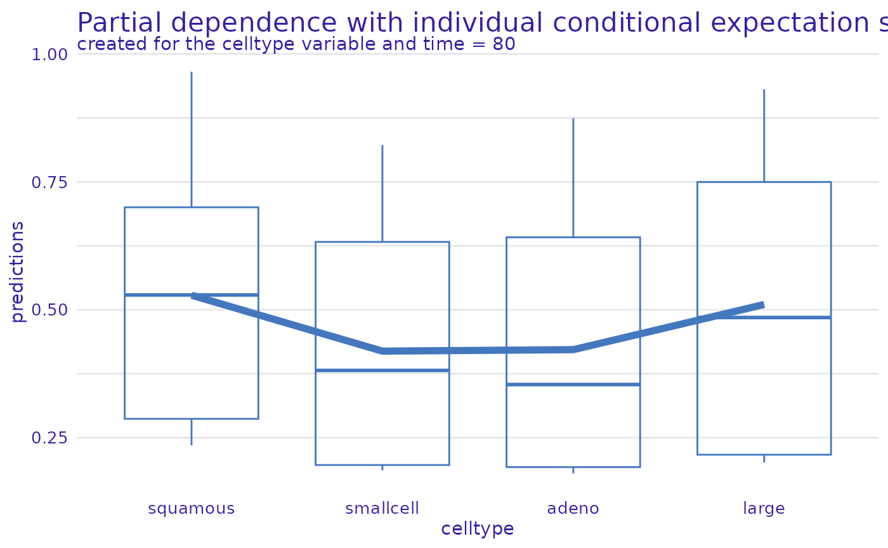

This vignette demonstrates how to use the Partial Dependence
explanations in survex, as well as Accumulated Local
Effects explanations. It especially demonstrates the usage of new kinds
of plots that are available in the 1.1 version of the package. To create
these explanations we follow the standard way of working with survex
i.e. we create a model, and an explainer.
library(survex)
library(survival)
library(ranger)
set.seed(123)
vet <- survival::veteran
rsf <- ranger(Surv(time, status) ~ ., data = vet)
exp <- explain(rsf, data = vet[, -c(3,4)], y = Surv(vet$time, vet$status))
#> Preparation of a new explainer is initiated
#> -> model label : ranger ( default )
#> -> data : 137 rows 6 cols
#> -> target variable : 137 values ( 128 events and 9 censored )
#> -> times : 50 unique time points , min = 1.5 , median survival time = 80 , max = 999
#> -> times : ( generated from y as uniformly distributed survival quantiles based on Kaplan-Meier estimator )
#> -> predict function : sum over the predict_cumulative_hazard_function will be used ( default )
#> -> predict survival function : stepfun based on predict.ranger()$survival will be used ( default )
#> -> predict cumulative hazard function : stepfun based on predict.ranger()$chf will be used ( default )
#> -> model_info : package ranger , ver. 0.15.1 , task survival ( default )
#> A new explainer has been created!We use the explainer and the model_profile() function to
calculate Partial Dependence explanations. We can specify the variables
for which we want to calculate the explanations. In this example we
calculate the explanations for the variables karno and
celltype. Note: The background for
generating PD values is the data field of the explainer! If
you want to calculate explanations with a background that is not the
training data, you need to manually specify the data
argument, when creating the explainer.
We can calculate Accumulated Local Effects in the same way, by
setting the type argument to
"accumulated".
pdp <- model_profile(exp, variables = c("karno", "celltype"), N = 20)
ale <- model_profile(exp, variables = c("karno", "celltype"), N = 20, type = "accumulated")To plot these explanations you can use the plot function. By default
the explanations for all calculated variables are plotted. This example
demonstrates this for the pdp object which contains the
explanations for 2 variables.
plot(pdp)We can plot ALE explanations in the same way as PD explanations, as is demonstrated by the example below. For the rest of the vignette we only focus on PD explanations.
plot(ale)
#> Warning: Removed 6 rows containing missing values (`geom_line()`).The plot() function can also be used to plot the
explanations for a subset of variables. The variables
argument specifies the variables for which the explanations are plotted.
The numerical_plot_type argument specifies the type of plot
for numerical variables. For numerical_plot_type = "lines"
(default), the y-axis represents the mean prediction (survival
function), x-axis represents the time dimension, and different colors
represent values of the studied variable. For
numerical_plot_type = "contours", the y-axis represents the
values of the studied variable, x-axis represents time, and different
colors represent the mean prediction (survival function).
The plots above make use of the time dependent output of survival
models, by placing the time dimension on the x-axis. However, for people
familiar with Partial Dependence explanations in classification and
regression, it might be more intuitive to place the variable values on
the x-axis. For this reason, we provide the
geom = "variable" argument, which can display the
explanations without the aspect of time.
To use this function a specific time of interest has to be chosen.
This time needs to be one of the values in the times field
of the explainer. For
times_generation = "survival_quantiles" (which is the
default when creating the explainer) the median survival time point is
also available. If the automatically generated times do not contain the
time of interest, one needs to manually specify the times
argument when creating the explainer.
The example below shows the PD explanations for the
karno variable at the median survival time. The y-axis
represents the mean prediction (survival function), x-axis represents
the values of the studied variable. Thin background lines are individual
ceteris paribus profiles (otherwise known as ICE profiles).
plot(pdp, geom = "variable", variables = "karno", times = exp$median_survival_time)The same plot can be generated for the categorical
celltype variable. In this case the x-axis represents the
different values of the studied variable, boxplots present the
distribution of individual ceteris paribus profiles, and the line
represents the mean prediction (survival function), which is the PD
explanation.
plot(pdp, geom = "variable", variables = "celltype", times = exp$median_survival_time)
Of course, the plots can be prepared for multiple time points, at the same time and presented on one plot.
selected_times <- c(exp$times[1], exp$median_survival_time, exp$times[length(exp$times)])
selected_times
#> [1] 1.5 80.0 999.0
plot(pdp, geom = "variable", variables = "karno", times = selected_times)
plot(pdp, geom = "variable", variables = "celltype", times = selected_times)survex also implements 2 dimensional PD and ALE
explanations. These can be used to study the interaction between
variables. The model_profile_2d() function can be used to
calculate these explanations. The variables argument
specifies the variables for which the explanations are calculated. The
type argument specifies the type of explanation, and can be
set to "partial" (default) or
"accumulated".
pdp_2d <- model_profile_2d(exp, variables = list(c("karno", "age")))
pdp_2d_num_cat <- model_profile_2d(exp, variables = list(c("karno", "celltype")))These explanations can be plotted using the plot function.
plot(pdp_2d, times = exp$median_survival_time)
plot(pdp_2d_num_cat, times = exp$median_survival_time)